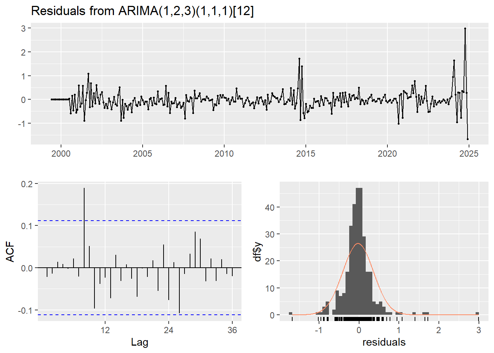
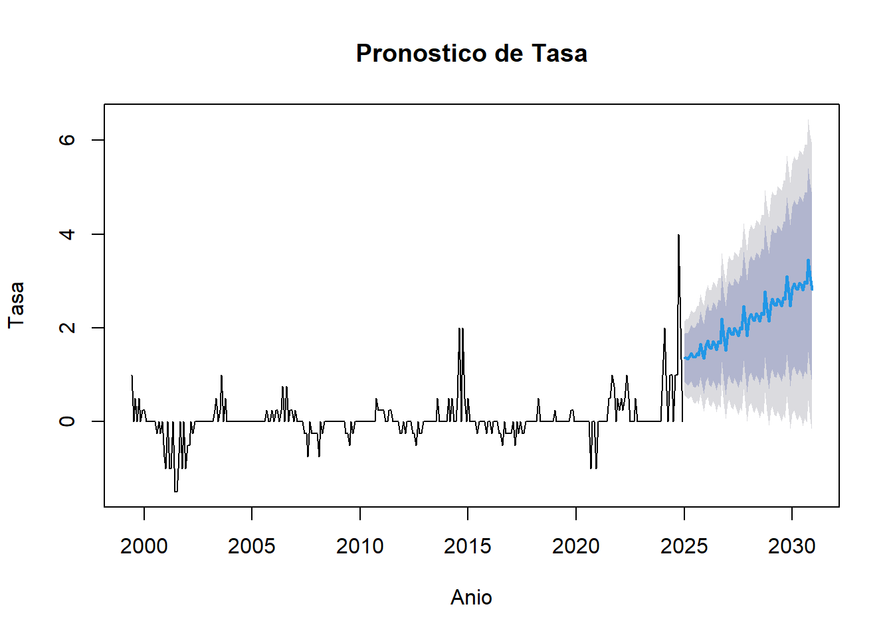

Analisis Tasa de Intervencion
2024-10-21
Capítulo: 1 Enunciado:
En este momento deberemos retomar la Unidad 1 en la cual se creó un minilibro que contiene el entregable de dicha unidad. Este documento tiene como repositorio GitHub (elaborado desde Markdown). Ahora, en esta Unidad 2, se debe continuar con los datos presentados en dicho entregable y se debe evidenciar, en una de las variables en el tiempo, la aproximación en promedio móvil, en rezagos y en estacionalidad. Todo lo anterior, a través de funciones y gráficas que permitan detectar patrones y ciclos de la variable.
1.1 Análisis exploratorio:
## tibble [310 × 2] (S3: tbl_df/tbl/data.frame)
## $ Fecha: POSIXct[1:310], format: "2024-10-01" "2024-09-01" ...
## $ Tasa : num [1:310] 10.2 10.8 10.8 11.8 11.8 ...Los datos representan una serie de tiempo de 310 filas y 2 columnas, correspondientes a la fecha y a la tasa. Se observa que la fecha realmente corresponde a un dato mensual por tanto conviene ajustar el formato.
## # A tibble: 2 × 2
## Fecha Tasa
## <dttm> <dbl>
## 1 2024-10-01 00:00:00 10.2
## 2 1999-01-01 00:00:00 26Al consultar el primer y último registro del dataset, se identifica que la observación más reciente corresponde al mes de octubre de 2024 con una tasa de 10.25%, mientras que el registro más antiguo es de enero de 1999, con una tasa de 26%. Estos datos indican que el dataset abarca un período de aproximadamente 25 años (310 meses), desde finales del siglo XX hasta la fecha actual, reflejando un amplio intervalo temporal que podría incluir distintas tendencias o cambios económicos en la variable Tasa.
## Fecha Tasa
## Min. :1999-01-01 00:00:00.00 Min. : 1.750
## 1st Qu.:2005-06-08 12:00:00.00 1st Qu.: 4.250
## Median :2011-11-16 00:00:00.00 Median : 6.000
## Mean :2011-11-16 00:18:34.83 Mean : 6.957
## 3rd Qu.:2018-04-23 12:00:00.00 3rd Qu.: 9.250
## Max. :2024-10-01 00:00:00.00 Max. :26.000- La serie cubre un rango de 25 años, con la mediana alrededor de 2011, lo que sugiere que los datos están relativamente bien distribuidos a lo largo del tiempo.
- La tasa tiene una amplia variabilidad, con un valor mínimo de 1.75 y un máximo de 26. La mayor parte de los valores se concentran entre 4.25 y 9.25 (entre el primer y tercer cuartil).
No se identifican datos ausentes:
## Fecha Tasa
## 0 0Con el código siguiente, se agregan dos columnas adicionales, llamadas Anio y Mes, lo anterior para poder tener una mejor visual de los datos, teniendo en cuenta el gran número de registros que tiene el dataset.
## # A tibble: 6 × 4
## Anio Mes Fecha Tasa
## <dbl> <ord> <date> <dbl>
## 1 2024 oct 2024-10-01 10.2
## 2 2024 sept 2024-09-01 10.8
## 3 2024 ago 2024-08-01 10.8
## 4 2024 jul 2024-07-01 11.8
## 5 2024 jun 2024-06-01 11.8
## 6 2024 may 2024-05-01 12.21.2 Gráficos de visualización:
## `geom_smooth()` using formula = 'y ~ x'Puntos Azules: Los puntos azules indican los valores de “Tasa” en momentos específicos. Hay una dispersión considerable, sugiriendo que la tasa ha experimentado fluctuaciones a lo largo del tiempo.
Línea Roja: Esta línea es el resultado de un ajuste de suavización (usando el método LOESS). La línea roja ilustra la tendencia general de la “Tasa” a lo largo del tiempo. A partir de la línea, se puede observar que, aunque hay variaciones, existe una tendencia que se puede analizar para hacer predicciones o entender mejor el comportamiento de la variable.
Variaciones: La gráfica muestra que la Tasa ha tenido picos y valles, lo que podría indicar variaciones estacionales o influencias externas que afectan la variable a lo largo del tiempo. A partir de la línea de suavización, parece que la Tasa ha ido disminuyendo o estabilizándose en ciertos períodos, teniendo una caída significativa desde 1999 hasta 2003, y un aumento importante de 2021 a 2024.
## `geom_smooth()` using formula = 'y ~ x'Esta gráfica permite ver con más detalle los cambios de tendencia:
Desde 1999, se confirma la disminución significativa en la tasa, que empieza muy alta (cerca de 25) y cae rápidamente hasta estabilizarse alrededor de los años 2007-2008 en un valor muy inferior (por debajo de 10).
Entre 2005 y 2020, se observan picos y caídas a intervalos relativamente regulares, pero sin grandes cambios en los niveles generales hasta el repunte final.
Eentre 2010 y 2020, la tasa se mantiene más estable, con algunas oscilaciones en torno a los 5-10 puntos.
A partir de 2021, hay una tendencia de aumento, que se hace más pronunciada hacia los años más recientes. Esto podría ser consecuencia de algún cambio en las políticas o factores externos como la pandemia de COVID-19.
La línea de tendencia suavizada indica una caída rápida, seguida de un periodo de estabilización, y finalmente una tendencia de aumento en los años recientes, semejando una forma de “U” suavizada.
## `summarise()` has grouped output by 'Anio'. You can override using the
## `.groups` argument.| Anio | ene | feb | mar | abr | may | jun | jul | ago | sept | oct | nov | dic |
|---|---|---|---|---|---|---|---|---|---|---|---|---|
| 1999 | 26.0 | 26.0 | 24.0 | 20.0 | 19.0 | 18.0 | 18.0 | 17.0 | 16.0 | 16.0 | 15.0 | 13.0 |
| 2000 | 12.0 | 12.0 | 12.0 | 12.0 | 12.0 | 12.0 | 12.0 | 12.0 | 12.0 | 12.0 | 12.0 | 12.0 |
| 2001 | 12.0 | 12.0 | 12.0 | 11.5 | 11.5 | 11.5 | 11.5 | 11.0 | 10.0 | 9.5 | 9.2 | 8.8 |
| 2002 | 8.5 | 8.0 | 8.0 | 7.2 | 6.2 | 5.8 | 5.2 | 5.2 | 5.2 | 5.2 | 5.2 | 5.2 |
| 2003 | 5.2 | 6.2 | 6.2 | 6.2 | 7.2 | 7.2 | 7.2 | 7.2 | 7.2 | 7.2 | 7.2 | 7.2 |
| 2004 | 7.2 | 7.2 | 7.0 | 6.8 | 6.8 | 6.8 | 6.8 | 6.8 | 6.8 | 6.8 | 6.8 | 6.8 |
| 2005 | 6.5 | 6.5 | 6.5 | 6.5 | 6.5 | 6.5 | 6.5 | 6.5 | 6.5 | 6.0 | 6.0 | 6.0 |
| 2006 | 6.0 | 6.0 | 6.0 | 6.0 | 6.0 | 6.2 | 6.5 | 6.5 | 6.8 | 6.8 | 7.2 | 7.2 |
| 2007 | 7.5 | 7.8 | 8.0 | 8.2 | 8.2 | 8.8 | 9.0 | 9.2 | 9.2 | 9.2 | 9.2 | 9.5 |
| 2008 | 9.5 | 9.5 | 9.8 | 9.8 | 9.8 | 9.8 | 9.8 | 10.0 | 10.0 | 10.0 | 10.0 | 10.0 |
| 2009 | 9.5 | 9.5 | 9.0 | 7.0 | 7.0 | 5.0 | 4.5 | 4.5 | 4.5 | 4.0 | 4.0 | 3.5 |
| 2010 | 3.5 | 3.5 | 3.5 | 3.5 | 3.5 | 3.0 | 3.0 | 3.0 | 3.0 | 3.0 | 3.0 | 3.0 |
| 2011 | 3.0 | 3.0 | 3.2 | 3.5 | 3.5 | 4.0 | 4.2 | 4.5 | 4.5 | 4.5 | 4.5 | 4.8 |
| 2012 | 4.8 | 5.0 | 5.2 | 5.2 | 5.2 | 5.2 | 5.2 | 5.0 | 4.8 | 4.8 | 4.8 | 4.5 |
| 2013 | 4.2 | 4.0 | 3.8 | 3.2 | 3.2 | 3.2 | 3.2 | 3.2 | 3.2 | 3.2 | 3.2 | 3.2 |
| 2014 | 3.2 | 3.2 | 3.2 | 3.2 | 3.5 | 3.5 | 4.0 | 4.2 | 4.5 | 4.5 | 4.5 | 4.5 |
| 2015 | 4.5 | 4.5 | 4.5 | 4.5 | 4.5 | 4.5 | 4.5 | 4.5 | 4.5 | 4.8 | 4.8 | 5.5 |
| 2016 | 5.8 | 6.0 | 6.2 | 6.5 | 6.5 | 7.2 | 7.5 | 7.8 | 7.8 | 7.8 | 7.8 | 7.8 |
| 2017 | 7.5 | 7.5 | 7.2 | 7.0 | 7.0 | 6.2 | 6.2 | 5.5 | 5.2 | 5.2 | 5.0 | 4.8 |
| 2018 | 4.8 | 4.5 | 4.5 | 4.5 | 4.2 | 4.2 | 4.2 | 4.2 | 4.2 | 4.2 | 4.2 | 4.2 |
| 2019 | 4.2 | 4.2 | 4.2 | 4.2 | 4.2 | 4.2 | 4.2 | 4.2 | 4.2 | 4.2 | 4.2 | 4.2 |
| 2020 | 4.2 | 4.2 | 4.2 | 3.8 | 3.8 | 2.8 | 2.5 | 2.5 | 2.0 | 1.8 | 1.8 | 1.8 |
| 2021 | 1.8 | 1.8 | 1.8 | 1.8 | 1.8 | 1.8 | 1.8 | 1.8 | 1.8 | 2.0 | 2.0 | 2.5 |
| 2022 | 3.0 | 4.0 | 4.0 | 5.0 | 5.0 | 6.0 | 7.5 | 9.0 | 9.0 | 10.0 | 11.0 | 11.0 |
| 2023 | 12.0 | 12.8 | 12.8 | 13.0 | 13.0 | 13.2 | 13.2 | 13.2 | 13.2 | 13.2 | 13.2 | 13.2 |
| 2024 | 13.0 | 12.8 | 12.8 | 12.2 | 12.2 | 11.8 | 11.8 | 10.8 | 10.8 | 10.2 | NA | NA |
A partir de la tabla se pueden confirmar las tendencias mencionadas anteriormente, con un comportamiento descendente en los 12 primeros años (1999 a 2010), una estabilización en los 5 años siguientes (2011-2015) y un incremento significativo en años recientes (2021 en adelante).
1.3 Análisis de serie de tiempo:
1.3.1 Promedio o media móvil
Permite analizar el mercado a través de las tendencias. La media móvil es una técnica estadística que se utiliza para analizar datos a lo largo del tiempo. Permite calcular la media de un conjunto de valores en un intervalo específico y luego desplazar ese intervalo a lo largo de la serie de datos para obtener una nueva serie de medias; lo que permite suavizar fluctuaciones en los datos así como resaltar tendencias.
Se conoce como media móvil ya que el valor se calcula constantemente a medida que pasa el tiempo; de esta forma, la media cambia cada vez que los valores presentan alguna modificación.
1.3.2 Rezago (operador backshift) y estacionalidad
El rezago es una herramienta estadística para el análisis de series temporales, que permite observar el valor de una variable en un momento anterior, facilitando la identificación de patrones y tendencias a lo largo del tiempo.
En cuanto a la estacionalidad, hace referencia a las variaciones periódicas y predecibles en los datos que ocurren en intervalos regulares.
Con la incorporación de ambas herramientas es posible modelar y prever comportamientos futuros de las series temporales.
## # A tibble: 6 × 6
## Anio Mes Fecha Tasa PromedioMovil Tasa_lag1
## <dbl> <ord> <date> <dbl> <dbl> <dbl>
## 1 2024 oct 2024-10-01 10.2 NA NA
## 2 2024 sept 2024-09-01 10.8 NA 10.2
## 3 2024 ago 2024-08-01 10.8 10.6 10.8
## 4 2024 jul 2024-07-01 11.8 11.1 10.8
## 5 2024 jun 2024-06-01 11.8 11.4 11.8
## 6 2024 may 2024-05-01 12.2 11.9 11.8
La gráfica visualiza la correlación entre una variable y sus valores rezagados (delayed values). Este gráfico es útil para detectar patrones en series temporales y evaluar la autocorrelación en los datos.
- 1. Año vs Rezagos (lag 1, 2, 3)
Las gráficas entre Año y sus diferentes rezagos muestran una relación lineal perfecta, lo que era de esperarse, ya que el valor de un año en un rezago anterior está directamente relacionado con los años consecutivos. Esto sugiere que el “Año” no aporta una variabilidad significativa en términos de cambios bruscos, es decir, la serie avanza sin saltos.
- 2. Mes vs Rezagos (lag 1, 2, 3)
Las gráficas entre Mes y sus rezagos muestran una estructura cíclica, con puntos que siguen un patrón predecible. Esto tiene sentido, ya que los meses siguen un ciclo repetitivo de 12 unidades (de enero a diciembre).
los meses correlacionan bien con sus rezagos inmediatos, pero a medida que aumenta el número de rezagos (lag 2, lag 3), el ciclo es más visible, lo que indica que la periodicidad estacional en los datos está bien representada.
1.4 Fecha vs Rezagos (lag 1, 2, 3):
Similar al año, la relación entre Fecha y sus rezagos también muestra una estructura lineal. Esto era previsible, ya que las fechas están organizadas de manera continua. No se observan cambios abruptos o interrupciones que puedan señalar eventos singulares en la serie temporal.
1.5 Tasa vs Rezagos (lag 1, 2, 3):
En las gráficas entre Tasa y sus rezagos, especialmente en el rezago 1 (lag 1), se aprecia una clara correlación positiva, lo que significa que la tasa en un mes está fuertemente relacionada con la tasa del mes anterior. Esta relación indica una persistencia en la tasa, es decir, no hay cambios abruptos entre periodos consecutivos.
A medida que el rezago aumenta (lag 2 y lag 3), la relación sigue siendo positiva pero disminuye levemente, lo cual es normal: los valores más distantes en el tiempo tienen menos influencia directa entre sí, aunque todavía se observa cierta correlación.
Esto sugiere que la serie de tasas no presenta grandes fluctuaciones a corto plazo y que los valores siguen un comportamiento más estable, lo que puede indicar una tendencia suave sin variaciones abruptas.
1.6 Promedio Movil vs Rezagos (lag 1, 2, 3):
Similar a la “Tasa”, las gráficas entre el Promedio Móvil y sus rezagos muestran una alta correlación, especialmente para lag 1. Esto sugiere que los promedios móviles no cambian drásticamente de un mes a otro, y los valores del promedio móvil están fuertemente ligados a los meses anteriores. A medida que aumenta el rezago (lag 2, lag 3), la correlación disminuye ligeramente, lo que indica que los valores anteriores siguen teniendo una influencia pero con una menor magnitud.
1.7 6. Tasa Lag1 vs Rezagos
Las gráficas entre Tasa_lag1 y sus rezagos también muestran una alta correlación. Esto es de esperar, ya que los valores rezagados de una variable tienden a mostrar correlación fuerte con rezagos cercanos.
Los gráficos de rezago muestran una clara autocorrelación tanto en las variables de Tasa como en el Promedio Móvil, lo que sugiere que los valores actuales están muy influenciados por sus valores anteriores.
No se observan grandes fluctuaciones o cambios abruptos en la serie temporal, lo que implica que los datos de tasa y promedio móvil siguen una evolución suave a lo largo del tiempo.
La estructura cíclica en los meses sugiere que existe un patrón estacional predecible, lo cual es clave para definir modelos de predicción de series temporales con componentes estacionales, como modelos ARIMA/SARIMA o de descomposición estacional.
Descomposición: Con la función stl(), se descompone la serie en tendencia, estacionalidad y componente residual.
Estacionariedad: La prueba ADF indica si la serie tiene una raíz unitaria (es decir, si no es estacionaria).
Diferenciación: Si la serie no es estacionaria, la diferenciación la ayuda a volverse estacionaria.

1.7.2 Estacionariedad
##
## Augmented Dickey-Fuller Test
##
## data: ts_data
## Dickey-Fuller = -1.15, Lag order = 6, p-value = 0.9133
## alternative hypothesis: stationary
1.7.4 Autocorrelación (ACF) y Parcial (PACF)
## [1] "Anio" "Mes" "Fecha" "Tasa"
## [5] "PromedioMovil" "Tasa_lag1"## [1] "Fecha" "Tasa"
1.7.5 Volver a verificar la Estacionariedad tras la Diferenciación
##
## Augmented Dickey-Fuller Test
##
## data: differenced_data
## Dickey-Fuller = -3.0792, Lag order = 6, p-value = 0.1214
## alternative hypothesis: stationary## [1] "Anio" "Mes" "Fecha" "Tasa"
## [5] "PromedioMovil" "Tasa_lag1"ts_data <- ts(data2[["Tasa"]], start = c(1999, 1), frequency = 12)
# Graficar ACF y PACF
par(mfrow = c(1, 2))
# Graficar ACF
#acf(ts_data, main = "ACF de la Serie Original")
# Graficar PACF
#pacf(ts_data, main = "PACF de la Serie Original")
# Ajustar el modelo ARIMA(0,0,3)(0,0,1)[12]
modelo_arima <- Arima(ts_data, order = c(0, 0, 3), seasonal = c(0, 0, 1))
# Resumen del modelo ajustado
summary(modelo_arima)## Series: ts_data
## ARIMA(0,0,3)(0,0,1)[12] with non-zero mean
##
## Coefficients:
## ma1 ma2 ma3 sma1 mean
## 1.7171 1.6105 0.7743 0.5829 7.3301
## s.e. 0.0381 0.0479 0.0376 0.0502 0.3817
##
## sigma^2 = 0.724: log likelihood = -389.13
## AIC=790.27 AICc=790.55 BIC=812.65
##
## Training set error measures:
## ME RMSE MAE MPE MAPE MASE
## Training set -0.009182104 0.8439211 0.5782735 -5.077274 10.40789 0.2748598
## ACF1
## Training set 0.364348
##
## Ljung-Box test
##
## data: Residuals from ARIMA(0,0,3)(0,0,1)[12] with non-zero mean
## Q* = 604.63, df = 20, p-value < 2.2e-16
##
## Model df: 4. Total lags used: 24# Pronosticar 12 períodos (ajustado para cubrir hasta 2030)
pronostico <- forecast(modelo_arima, h = 72) # 72 meses = 6 años
# Graficar el pronóstico con el eje x correcto
plot(pronostico, xlab = "Año", ylab = "Tasa", main = "Pronóstico de Tasa")
## [1] "Anio" "Mes" "Fecha" "Tasa"
## [5] "PromedioMovil" "Tasa_lag1"ts_data <- ts(data2[["Tasa"]], start = c(1999, 1), frequency = 12)
# Normal QQ Plot de los residuos
#residuos_diff <- residuals(modelo_arima_diff)
#par(mfrow = c(1, 1))
#qqnorm(residuos_diff, main = "Normal QQ Plot de Residuos")
#qqline(residuos_diff, col = "red")
# Pronosticar 72 períodos (6 años)
#n_periods <- 72
#pronostico_diff <- forecast(modelo_arima_diff, h = n_periods)
# Graficar el pronóstico
#plot(pronostico_diff, main = "Pronóstico de Tasa")# Cargar las bibliotecas necesarias
library(forecast) # Para el modelado ARIMA
library(tseries) # Para funciones adicionales
library(ggplot2) # Para gráficos
# Verificar los nombres de las columnas en data2
print(colnames(data2))## [1] "Anio" "Mes" "Fecha" "Tasa"
## [5] "PromedioMovil" "Tasa_lag1"# Convertir los datos a un objeto ts, usando frecuencia mensual
ts_data <- ts(data2[["Tasa"]], start = c(1999, 1), frequency = 12)
# Probar la estacionariedad de la serie original
adf_test <- adf.test(ts_data, alternative = "stationary")
print(adf_test)##
## Augmented Dickey-Fuller Test
##
## data: ts_data
## Dickey-Fuller = -1.15, Lag order = 6, p-value = 0.9133
## alternative hypothesis: stationary# Diferenciar la serie si no es estacionaria
differenced_data <- diff(ts_data)
# Probar la estacionariedad de la serie diferenciada
adf_test_diff <- adf.test(differenced_data, alternative = "stationary")
print(adf_test_diff)##
## Augmented Dickey-Fuller Test
##
## data: differenced_data
## Dickey-Fuller = -3.0792, Lag order = 6, p-value = 0.1214
## alternative hypothesis: stationary# Ajustar el modelo ARIMA(0,1,3)(0,1,1)[12] si es necesario
modelo_arima_diff <- Arima(ts_data, order = c(0, 1, 3), seasonal = c(0, 1, 1))
# Resumen del modelo ajustado
summary(modelo_arima_diff)## Series: ts_data
## ARIMA(0,1,3)(0,1,1)[12]
##
## Coefficients:
## ma1 ma2 ma3 sma1
## 0.3125 0.2829 0.2279 -0.8757
## s.e. 0.0706 0.0527 0.0733 0.0470
##
## sigma^2 = 0.1739: log likelihood = -167.4
## AIC=344.81 AICc=345.02 BIC=363.24
##
## Training set error measures:
## ME RMSE MAE MPE MAPE MASE
## Training set 0.03580656 0.405304 0.2349259 0.6962434 4.046636 0.1116629
## ACF1
## Training set 0.02835974
##
## Ljung-Box test
##
## data: Residuals from ARIMA(0,1,3)(0,1,1)[12]
## Q* = 46.306, df = 20, p-value = 0.0007315
##
## Model df: 4. Total lags used: 24# Normal QQ Plot de los residuos
residuos_diff <- residuals(modelo_arima_diff)
par(mfrow = c(1, 1)) # Asegúrate de que solo hay un gráfico en la ventana
qqnorm(residuos_diff, main = "Normal QQ Plot de Residuos")
qqline(residuos_diff, col = "red")
# Realizar el test de normalidad de Shapiro-Wilk
shapiro_test <- shapiro.test(residuos_diff)
print(shapiro_test)##
## Shapiro-Wilk normality test
##
## data: residuos_diff
## W = 0.7956, p-value < 2.2e-16# Pronosticar 72 períodos (6 años)
n_periods <- 72
pronostico_diff <- forecast(modelo_arima_diff, h = n_periods)
# Graficar el pronóstico
plot(pronostico_diff, main = "Pronóstico de Tasa")
#install.packages("fGarch", repos = "http://cran.us.r-project.org")
ts_data <- ts(data2[["Tasa"]], start = c(1999, 1), frequency = 12)
adf_test <- adf.test(ts_data, alternative = "stationary")
print(adf_test)##
## Augmented Dickey-Fuller Test
##
## data: ts_data
## Dickey-Fuller = -1.15, Lag order = 6, p-value = 0.9133
## alternative hypothesis: stationarydifferenced_data <- diff(ts_data)
adf_test_diff <- adf.test(differenced_data, alternative = "stationary")
print(adf_test_diff)##
## Augmented Dickey-Fuller Test
##
## data: differenced_data
## Dickey-Fuller = -3.0792, Lag order = 6, p-value = 0.1214
## alternative hypothesis: stationary# Ajustar el modelo ARIMA(0,1,3)(0,1,1)[12]
modelo_arima_diff <- Arima(ts_data, order = c(0, 1, 3), seasonal = c(0, 1, 1))
# Resumen del modelo ajustado
summary(modelo_arima_diff)## Series: ts_data
## ARIMA(0,1,3)(0,1,1)[12]
##
## Coefficients:
## ma1 ma2 ma3 sma1
## 0.3125 0.2829 0.2279 -0.8757
## s.e. 0.0706 0.0527 0.0733 0.0470
##
## sigma^2 = 0.1739: log likelihood = -167.4
## AIC=344.81 AICc=345.02 BIC=363.24
##
## Training set error measures:
## ME RMSE MAE MPE MAPE MASE
## Training set 0.03580656 0.405304 0.2349259 0.6962434 4.046636 0.1116629
## ACF1
## Training set 0.02835974
##
## Ljung-Box test
##
## data: Residuals from ARIMA(0,1,3)(0,1,1)[12]
## Q* = 46.306, df = 20, p-value = 0.0007315
##
## Model df: 4. Total lags used: 24# Normal QQ Plot de los residuos
residuos_diff <- residuals(modelo_arima_diff)
par(mfrow = c(1, 1))
qqnorm(residuos_diff, main = "Normal QQ Plot de Residuos")
qqline(residuos_diff, col = "red")
# Realizar el test de normalidad de Shapiro-Wilk
shapiro_test <- shapiro.test(residuos_diff)
print(shapiro_test)##
## Shapiro-Wilk normality test
##
## data: residuos_diff
## W = 0.7956, p-value < 2.2e-16##
## ***** ESTIMATION WITH ANALYTICAL GRADIENT *****
##
##
## I INITIAL X(I) D(I)
##
## 1 1.471681e-01 1.000e+00
## 2 5.000000e-02 1.000e+00
## 3 5.000000e-02 1.000e+00
##
## IT NF F RELDF PRELDF RELDX STPPAR D*STEP NPRELDF
## 0 1 -1.336e+02
## 1 3 -1.502e+02 1.11e-01 1.26e-01 3.5e-01 1.9e+03 1.0e-01 1.18e+02
## 2 4 -1.536e+02 2.19e-02 8.14e-02 2.5e-01 2.2e+00 1.0e-01 7.36e+02
## 3 6 -1.606e+02 4.39e-02 3.93e-02 5.1e-02 3.9e+00 2.3e-02 4.21e+02
## 4 7 -1.657e+02 3.08e-02 6.33e-02 9.6e-02 3.9e+00 4.6e-02 4.92e+02
## 5 8 -1.708e+02 2.98e-02 4.44e-02 7.7e-02 2.0e+00 4.6e-02 1.72e+02
## 6 9 -1.763e+02 3.12e-02 3.25e-02 6.6e-02 2.0e+00 4.6e-02 1.55e+02
## 7 10 -1.833e+02 3.82e-02 5.07e-02 1.2e-01 2.0e+00 9.2e-02 6.74e+01
## 8 12 -1.842e+02 4.82e-03 1.46e-02 2.4e-02 2.0e+00 2.2e-02 2.40e+01
## 9 13 -1.867e+02 1.33e-02 1.73e-02 1.8e-02 2.0e+00 2.2e-02 1.28e+01
## 10 16 -1.936e+02 3.54e-02 9.56e-02 1.9e-01 2.0e+00 2.5e-01 1.21e+01
## 11 21 -1.978e+02 2.13e-02 6.13e-02 1.1e-02 3.1e+00 1.2e-02 3.57e-01
## 12 22 -1.981e+02 1.79e-03 1.32e-03 9.3e-03 2.0e+00 1.2e-02 7.32e-03
## 13 23 -1.983e+02 6.06e-04 8.60e-04 7.5e-03 2.0e+00 1.2e-02 3.02e-02
## 14 26 -1.984e+02 7.73e-04 1.10e-03 3.7e-02 1.8e+00 5.4e-02 1.40e-02
## 15 27 -1.985e+02 6.45e-04 1.26e-03 4.7e-02 1.5e+00 5.4e-02 5.86e-03
## 16 29 -1.986e+02 6.98e-05 1.39e-04 1.2e-02 9.5e-01 1.8e-02 2.86e-04
## 17 30 -1.986e+02 4.70e-05 6.56e-05 1.1e-02 6.4e-01 1.8e-02 7.84e-05
## 18 32 -1.986e+02 9.40e-07 4.03e-06 3.0e-03 7.1e-01 4.4e-03 5.67e-06
## 19 35 -1.986e+02 2.06e-07 5.00e-07 5.0e-04 1.4e+00 7.4e-04 1.80e-06
## 20 38 -1.986e+02 9.89e-08 1.38e-07 1.6e-04 1.8e+00 2.4e-04 1.34e-06
## 21 41 -1.986e+02 2.63e-08 4.21e-08 5.6e-05 1.9e+00 8.2e-05 1.22e-06
## 22 53 -1.986e+02 4.29e-16 3.48e-18 3.0e-15 6.7e+08 4.9e-15 1.18e-06
## 23 54 -1.986e+02 -7.16e-16 6.95e-18 5.9e-15 3.3e+08 9.8e-15 1.18e-06
##
## ***** FALSE CONVERGENCE *****
##
## FUNCTION -1.985695e+02 RELDX 5.909e-15
## FUNC. EVALS 54 GRAD. EVALS 23
## PRELDF 6.954e-18 NPRELDF 1.176e-06
##
## I FINAL X(I) D(I) G(I)
##
## 1 2.417150e-02 1.000e+00 9.607e-02
## 2 5.671540e-01 1.000e+00 5.482e-02
## 3 4.193714e-01 1.000e+00 -8.692e-02##
## Call:
## garch(x = residuos_diff, order = c(1, 1))
##
## Model:
## GARCH(1,1)
##
## Residuals:
## Min 1Q Median 3Q Max
## -4.45689 -0.39305 0.05776 0.43589 5.18143
##
## Coefficient(s):
## Estimate Std. Error t value Pr(>|t|)
## a0 0.024172 0.003891 6.212 5.25e-10 ***
## a1 0.567154 0.080415 7.053 1.75e-12 ***
## b1 0.419371 0.071239 5.887 3.94e-09 ***
## ---
## Signif. codes: 0 '***' 0.001 '**' 0.01 '*' 0.05 '.' 0.1 ' ' 1
##
## Diagnostic Tests:
## Jarque Bera Test
##
## data: Residuals
## X-squared = 390.33, df = 2, p-value < 2.2e-16
##
##
## Box-Ljung test
##
## data: Squared.Residuals
## X-squared = 0.11988, df = 1, p-value = 0.7292## Min. 1st Qu. Median Mean 3rd Qu. Max.
## -1.45643 -0.11092 0.01333 0.03581 0.14946 3.48249